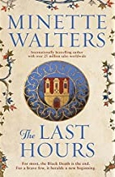
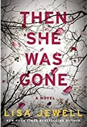

educated

Buy at Amazon
Author: Tara Westover
Description:
Tara Westover was seventeen when she first set foot in a classroom. Instead of
traditional lessons, she grew up learning how to stew herbs into medicine,
scavenging in the family scrap yard and helping her family prepare for the
apocalypse. She had no birth certificate and no medical records and had never
been enrolled in school.
Westover’s mother proved a marvel at concocting folk remedies for many ailments.
As Tara developed her own coping mechanisms, little by little, she started to
realize that what her family was offering didn’t have to be her only education.
Her first day of university was her first day in school—ever—and she would
eventually win an esteemed fellowship from Cambridge and graduate with a PhD
in intellectual history and political thought.
Back to top
Exit West

Buy at Amazon
Author: Moshin Hamid
Description:
In a country teetering on the brink of civil war, two young people meet—sensual,
fiercely independent Nadia and gentle, restrained Saeed. They embark on a furtive
love affair, and are soon cloistered in a premature intimacy by the unrest roiling
their city. When it explodes, turning familiar streets into a patchwork of
checkpoints and bomb blasts, they begin to hear whispers about doors—doors
that can whisk people far away, if perilously and for a price. As the violence
escalates, Nadia and Saeed decide that they no longer have a choice. Leaving their
homeland and their old lives behind, they find a door and step through. . . .
Exit West follows these remarkable characters as they emerge into an alien and
uncertain future, struggling to hold on to each other, to their past, to the very
sense of who they are. Profoundly intimate and powerfully inventive, it tells an
unforgettable story of love, loyalty, and courage that is both completely of our
time and for all time.
Back to top
How to Stop Time

Buy at Amazon
Author: Matt Haig
Description:
Tom Hazard has a dangerous secret. He may look like an ordinary 41-year-old, but because of a
rare condition, he's been alive for centuries. From performing with Shakespeare, to exploring the
high seas with Captain Cook, to sharing cocktails with F. Scott Fitzgerald, Tom has seen a lot.
But now, after over 400 years of reinventing himself to escape detection, he just wants an
ordinary life. The only rule he has to follow is Don’t fall in love.
When Tom catches the eye of a captivating woman named Camille at the dog park, everything
begins to unravel. Caught between the danger of discovery and the desire to build a real life,
Tom learns that the thing he can't have might just be the thing that saves him.
A wild, bittersweet, time-travelling story, How to Stop Time is about losing and finding
yourself, about the certainty of change, about the perils of love and about the mistakes that
humans are doomed to repeat. It asks the question, How many lifetimes does it take to learn
how to live?
Back to top
The Book of M
Buy at Amazon
Author: Peng Shepherd
Description:
WHAT WOULD YOU GIVE UP TO REMEMBER?
Set in a dangerous near future world, The Book of M tells the captivating story of a
group of ordinary people caught in an extraordinary catastrophe who risk everything
to save the ones they love. It is a sweeping debut that illuminates the power that
memories have not only on the heart, but on the world itself.
One afternoon at an outdoor market in India, a man’s shadow disappears—an occurrence
science cannot explain. He is only the first. The phenomenon spreads like a plague,
and while those afflicted gain a strange new power, it comes at a horrible price:
the loss of all their memories.
Ory and his wife Max have escaped the Forgetting so far by hiding in an abandoned
hotel deep in the woods. Their new life feels almost normal, until one day Max’s
shadow disappears too.
Knowing that the more she forgets, the more dangerous she will become to Ory, Max
runs away. But Ory refuses to give up the time they have left together. Desperate
to find Max before her memory disappears completely, he follows her trail across a
perilous, unrecognizable world, braving the threat of roaming bandits, the call to
a new war being waged on the ruins of the capital, and the rise of a sinister cult
that worships the shadowless.
As they journey, each searches for answers: for Ory, about love, about survival,
about hope; and for Max, about a new force growing in the south that may hold the
cure.
Like The Passage and Station Eleven, this haunting, thought-provoking, and beautiful
novel explores fundamental questions of memory, connection, and what it means to be
human in a world turned upside down.
Back to top
The Greek Escape

Buy at Amazon
Author: Karen Swan
Description:
Running from heartbreak, Chloe Marston leaves her old life in
London for a fresh start in New York. Working at a luxury concierge
company, she makes other people’s lives run perfectly, even if her
own has ground to a halt. But a terrible accident forces her to step
into a new role, up close and personal with the company’s most
esteemed and powerful clients. Charismatic Joe Lincoln is one of
them and his every wish is her command, so when he asks her to find
him a secluded holiday home in the Greek Islands, she sets about
sourcing the perfect retreat.
But when Tom, her ex, unexpectedly shows up in Manhattan and the
stability of her new life is thrown off-balance again, she jumps at
the chance to help Joe inspect the holiday house; escaping to
Greece will give her the time and space to decide where her future
truly lies. Tom is the man she has loved for so long but he has hurt
her before – can she give him another chance? And as she draws closer
to Joe, does she even want to? As magnetic as he is mysterious,
there’s an undeniable chemistry between them that she can’t resist.
Back to top
The Last Hours

Buy at Amazon
Author: Minette Walters
Description:
Widowed by her husband’s death from the pestilence, Lady Anne
assumes control of his people’s future—200 bonded serfs without
rights of ownership to land. Strong, compassionate and
resourceful—qualities she kept hidden from the husband she loathed
and despised—Lady Anne chooses a bastard slave, Thaddeus Thurkell,
to act as her steward. Together, they decide to quarantine Develish
by bringing the serfs inside a defendable moat and sharing the
available food amongst all. With this sudden overturning of the
accepted social order, where serfs exist only to serve their lords,
conflict arises when they’re given a voice. Ignorant of what is
happening in the world outside, they wrestle with themselves, with
God and the terrible uncertainty of their futures. They fear
starvation when their food runs out but they fear the pestilence
more. Who amongst them has the courage to leave the safety of the
demesne in search of supplies and news? And how safe is anyone in
Develish when an unexplained murder threatens the uneasy status
quo?
In The Last Hours Minette Walters brings all her trademark
intelligence to a totally new timeframe—creating a vivid and
powerful drama through compelling characters whose journey
readers will be drawn to. The Last Hours is an exciting new
direction from an established best-selling author and Minette
is currently writing the sequel.
Back to top
Then She Was Gone

Buy at Amazon
Author: Lisa Jewell
Description:
Ellie Mack was the perfect daughter. She was fifteen, the youngest
of three. She was beloved by her parents, friends, and teachers. She
and her boyfriend made a teenaged golden couple. She was days away
from an idyllic post-exams summer vacation, with her whole life
ahead of her.
And then she was gone.
Now, her mother Laurel Mack is trying to put her life back together.
It’s been ten years since her daughter disappeared, seven years since
her marriage ended, and only months since the last clue in Ellie’s case
was unearthed. So when she meets an unexpectedly charming man in a
café, no one is more surprised than Laurel at how quickly their flirtation
develops into something deeper. Before she knows it, she’s meeting
Floyd’s daughters—and his youngest, Poppy, takes Laurel’s breath away.
Back to top